<!-- body.html is optional; elements will be added to your html body after app.js is loaded. -->


<a-scene
  landing-page
  xrextras-loading
  xrextras-runtime-error
  xrextras-gesture-detector
  renderer="colorManagement: true"
  xrweb="allowedDevices: any;"
  openai-overlay="mode: toggle; chatModel: gpt-3.5-turbo; imageSize: 512x512">
  <a-assets>
    <a-asset-item id="ob" src="./assets/white_object.glb"></a-asset-item>
  </a-assets>

  <a-entity
    light="
      intensity: 0.35;
      type: directional;
      castShadow: true;
      shadowMapHeight:2048;
      shadowMapWidth:2048;
      shadowRadius: 4;
      target: #camera"
    xrextras-attach="target: camera; offset: -8 15 4"
    position="-1 4.3 2.5"
    shadow>
  </a-entity>
  <a-light type="ambient" intensity="0.25"></a-light>

  <a-camera id="camera" position="0 1.6 1.75"></a-camera>
  <a-box id="screen"
  xrextras-spin="speed: 10000"
  position="0 2.5 -5" 
  width="5" height="2" depth="1"
  color="#4CC3D9"
  reflections="type: realtime"
  openai-texture></a-box> 

  <a-entity
  openai-texture
  gltf-model="#ob"
  scale="-0.1 -0.1 -0.1"
  radius="0.52"
  xrextras-spin="speed: 10000"
  position="0 1 -5"
  reflections="type: realtime"
  shadow="receive: false">
  </a-entity>     

  <a-troika-text
    position="-0.1 -1.5 -0.1"
    rotation="0 0 0"
    align="justify"
    baseline="bottom"
    wrap-count="10"
    curve-radius="3"
    max-width="2.75"
    font-size="0.2"
    outline-blur="0.03"
    outline-opacity="0.3"
    openai-text></a-troika-text>
</a-scene>
